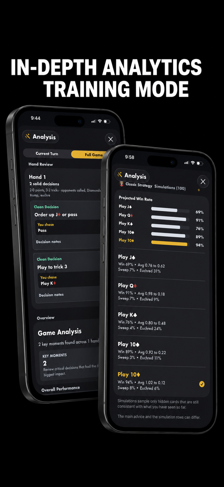
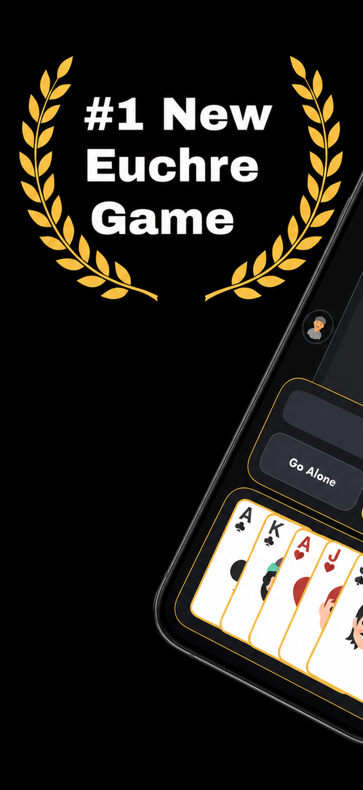

What is new
Live games, smarter solo play, and training that explains the hand.
Live Euchre Tables
Start ongoing games with friends, keep multiple tables moving, use in-game chat, quick messages, table highlights, and player summaries.
Solo and Bot Play
Take on classic and advanced strategy bots, including Ohio-style inspired opponents and stronger progression teams as you level up.
Training Mode
Improve calls, passes, card play, and key decisions with in-game advice, deeper strategy review, and post-game analysis.
Choose Your Partner
Pick the partner bot style that fits your play, then test your chemistry across 1 vs 1, 1 vs 2, and full 2 vs 2 games.
Progression and Rewards
Climb through Play Mode, unlock tougher teams, earn bonus XP, chase achievements, celebrate leaderboard wins, and track milestones.
Personal Table Feel
Customize color schemes, card styles, animation speed, sound settings, and hand appearance for a clean classic or bold modern table.
Train smarter
Review the decisions that changed the game.
Want to improve? Training Mode and post-game analysis help you understand your calls, passes, card play, and key decisions after the hand or game is over.
Review what worked, spot what could have gone better, and build a stronger Euchre instinct over time.


App Store screenshots
Built for quick hands, long rivalries, and the table style you like.
Ways to play
Solo practice, live tables, and rule sets that fit your group.
- Live Euchre Tables for ongoing games with friends
- Support for 1 vs 1, 1 vs 2, and full 2 vs 2 games
- Smart classic and advanced strategy bots
- Ohio-style inspired bot opponents and progression teams
- XP progression, achievements, unlocks, milestones, leaderboards, and divisions
- Detailed personal stats and Euchre Table stats

Euchre app FAQ
For players searching for a better Euchre game.
Can I play Euchre with friends?
Yes. Euchre with Friends supports live Euchre Tables, ongoing games, in-game chat, quick messages, player summaries, and table stats.
Can I play Euchre offline or solo?
Yes. You can play against smart classic and advanced strategy bots, choose your partner, and progress through stronger teams.
Does the game help me improve?
Training Mode, in-game advice, simulations, and post-game analysis help you review calls, passes, trick play, and key decisions.
Is Euchre with Friends customizable?
Yes. Choose table color schemes, card styles, animation speed, sound settings, hand appearance, and house-rule options.